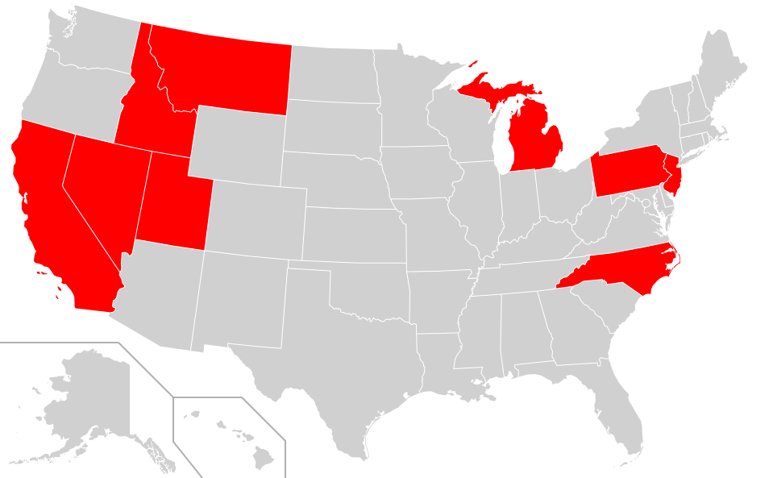

I donated blood with the American Red Cross for the first time in 2015 while I was still in high school. I tried donating platelets for the first time in 6 years later, although it took me a few attempts to finish a successful donation. Since then, I tried to donate at least a few times each year. Most of my blood ends up going to patients in Utah, but sometimes it gets sent out of the state. Now I hope to get my blood sent to every state in the US.

Other locations:
- Puerto Rico